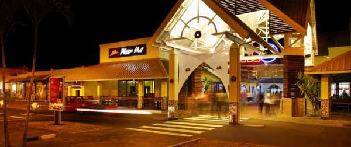

The island’s reputation as a shopping paradise is enhanced by the diversity and quality of shopping opportunities.
Shopping experiences in Mauritius are absolutely amazing: ranging from shopping in a relaxed atmosphere in shopping centers, doing duty-free shopping or shopping in craft markets or even buying artisanal objects from hawkers on the beach or on streets.
Along with the shopping centres, you will find restaurants where continental dishes are available.
List of Popular Shopping Centres along with their Restaurants

Whether it’s shopping, food, entertainment or a fun family outing you’re after, Centre Commercial Phoenix is the perfect venue to fulfil your needs. Newly extended to include an additional 37 retail outlets, the mall now boasts more than 100 shops, inviting you to a more glorious shopping experience. From leading local retailers to world-famous international brands, and delicious eateries featuring delicacies from around the world, Centre Commercial Phoenix is the one-stop destination for your shopping indulgences and excellent food.
Bagatelle Mall of Mauritius is the leading shopping and retail destination in Mauritius. Its dominant presence and comprehensive retail and leisure options attract diverse shoppers from all over the island. Bagatelle Mall of Mauritius merges the world's most desirable brands, shopping convenience, entertainment, and everyday leisure, all in a majestic setting.
Bagatelle Mall of Mauritius hosts the widest selection of specialty stores in Mauritius - there are 130 shops - thus offering the most comprehensive and compelling lifestyle shopping experience on the island. The spacious Food Court also gives hungry shoppers plenty of mouthwatering options; while the Central Promotions Court is a popular venue for a range of promotional activities.
Located at one of the busiest junctions in the western part of the island, connecting Black River, Tamarin and Flic en Flac, Cascavelle Shopping Village is a one-stop-shop in the West of Mauritius, with a 2,500m² supermarket, designer shops, every day service providers, an attractive food court and restaurants.
In addition, Cascavelle Shopping Village provides 400 parking bays, with parking specially allocated for the disabled. Cascavelle Shopping Village offers a lively and vibrant open-air setting, with airy patios, stunning views on the sea and the mountains, in a lush environment, open seven days a week.
Grand Baie La Croisette is a totally new concept of urban lifestyle in Mauritius.
Its mixed-use development encompasses modern urban living, spaces to enjoy and a mix of leisure activities. The complex sits on a 29 arpent urban lot, complete with a central outdoor esplanade, grade A offices, luxury apartments, trendy and upscale retail shops and abundant on-site covered parking. It harmoniously combines a number of different activities for a new interpretation of shopping, work and leisure.
More than just a premier shopping destination, more than just a luxury residential complex, more than just a premium office complex, Grand Baie La Croisette is the essence of new urban living. Grand Baie La Croisette is an inviting place to enjoy and relax. An international gathering place that welcomes visitors and residents on an amazing journey through couture, cuisine and entertainment as they enjoy a unique sense of place at the heart of it all.